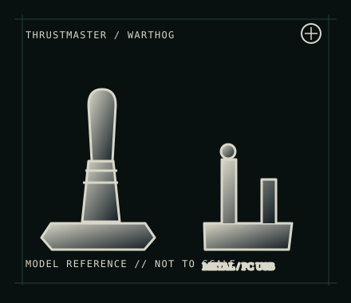

[ JOYSTICK CONTROLLERS // IDENTIFIED COMPONENT ]
Thrustmaster HOTAS Warthog
PC-only dual USB flight-control set with metal replica stick and throttle assemblies modeled after the A-10C.

MODEL IDENTIFICATION: Thrustmaster HOTAS Warthog; manufacturer family identifier 2960720 (regional packages/revisions vary). Verify each component label. Published family specifications may not establish the revision or condition of an individual unit; compare its label and included parts with the linked documentation.
Model specifications
| Catalog subcategory | Joystick controllers |
|---|---|
| Exact model / identifier | Thrustmaster HOTAS Warthog; manufacturer family identifier 2960720 (regional packages/revisions vary). Verify each component label. |
| Design and controls | Separate metal stick and throttle units with extensive switches, hats, buttons and axes. The design uses replica-style controls and supports vendor scripting/profiles; some grip/base combinations and production revisions differ. |
| Physical interface | Stick and throttle connect independently to the PC over USB. Plan for two ports and map the units separately in the simulator. It is intended for Windows PC, not PlayStation or Xbox. |
| Host compatibility | Windows PC with games that accept USB joystick/HOTAS controls. The manufacturer provides model-specific Windows support; console play is not supported. Check game-specific bindings for the many physical switches. |
| Driver and configuration | Thrustmaster provides drivers, manuals and software from the HOTAS Warthog support page. T.A.R.G.E.T can program advanced profiles where supported; the device’s basic controller input and advanced software profile are separate layers. |
Setup and control mapping
Calibrate the stick and throttle independently. Map each axis and multi-position switch in the sim; preserve the native button-number map when building profiles. Some switch states require a profile or simulator support and may not appear as a simple momentary press.
Before use, connect the device directly to the stated host, confirm it appears once in the operating system’s controller list, and test every axis and button. Keep host calibration separate from in-game dead-zone and sensitivity settings so later maintenance can reproduce the baseline.
Preservation and service notes
Inspect USB connectors and inter-unit cabling, keep the metal grip/base dry, and document detent or friction configuration. Because controls are dense, use a button-test sheet and retain the active profile with the host configuration.
Revision caveat: This is a large, power-hungry dual-unit PC HOTAS rather than a console gamepad. Avoid assuming compatibility from the USB connector alone; check current software support and whether the target sim understands toggle and multi-position switch states.
For a physical archive entry, record the as-found label, serial/part number where present, accessories, host OS, driver or firmware version, and test method. Separate observed condition from published specifications.
References and support
- HOTAS Warthog — ThrustmasterManufacturer model page for product-level specifications; its current route may show the updated MKII variant.
- HOTAS Warthog support — ThrustmasterOfficial manuals, drivers and software references for this PC HOTAS.
- HOTAS Warthog user manual — ThrustmasterManufacturer manual for identification, operation and setup of the Warthog devices.
Vendor pages and downloads can be revised or retired. Preserve the applicable manual locally and note its revision; use the exact product label when choosing firmware or drivers.